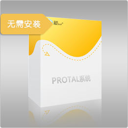

售后服务
-

- 客户日常使用方面
- 提供7*10小时
客户热线：
0755-29558715 -

- 系统运维方面
- 提供电信级的数据中心及系统运维安全保障，有专业的运维团队人员。
-

- 数据安全方面
- 提供日常备份管理；支持按权限导出数据功能
我公司PORTAL系统是基于 人、财、物、流一体化的高端管理软件。即时自动处理各种业务单据，准确统计各类款项，高效处理委托代销、借欠、促销、会员管理等各项工作，及时根据销售和库存动态信息分析为企业提供经营决策。
高效处理库存帐、应收帐、进销存明细统计、费用、支出等各种烦琐的记账和统计工作，全面提高工作效率
库存数量及时更新，通过库存报表和库存上下限报警，及时提醒补货或消化库存，提高使用效率。
通过畅销排行榜快速准确地了解货品畅销滞销状况，保持安全库存量和合理的库存结构。
明确责权，规范流程，以业务流程为驱动实现各部门的协作，提高企业运转效率。
即时自动处理各种业务单据，准确统计各类款项，往来对账清楚明了，信用额度和账期实时掌握。
经营信息实时掌控，哪些货品要多备货，哪些货品要抓紧促销，哪些货款要尽快回收，各种经营决策有数字依据。